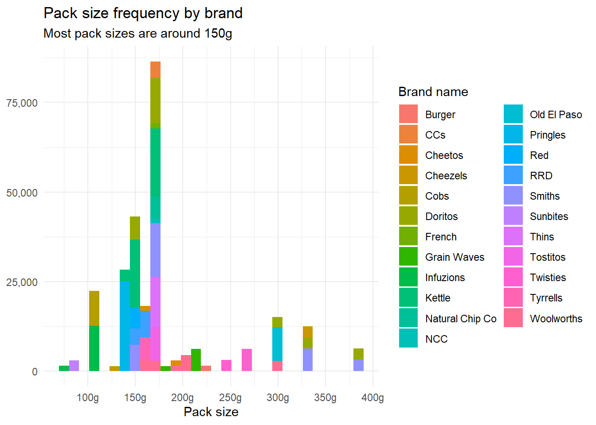

Rows: 72637 Columns: 3
── Column specification ────────────────────────────────────────────────────────
Delimiter: ","
chr (2): LIFESTAGE, PREMIUM_CUSTOMER
dbl (1): LYLTY_CARD_NBR
ℹ Use `spec()` to retrieve the full column specification for this data.
ℹ Specify the column types or set `show_col_types = FALSE` to quiet this message.
prod_info_raw = readxl::read_xlsx(dfile[2])
There is a lot of information kept in one column, the PROD_NAME column. I split that column into three columns to disentangle the pack_size and the prod_brand from the prod_name. Now we can see what sizes of packs are included and how many brands are in the dataset.
Some of the substitutions I made need to be checked with the customer. For example: is “NCC” the same as “Natural Chip Co”? I left them as a seperate category but this could be better handled with more information. The skimr package in R will allow a quick overview of the completeness of the data and other high-level summaries of the data type and distribution.
skim(prod_info)
Data summary
Name
prod_info
Number of rows
264836
Number of columns
11
_______________________
Column type frequency:
character
3
Date
1
factor
4
numeric
3
________________________
Group variables
None
Variable type: character
skim_variable
n_missing
complete_rate
min
max
empty
n_unique
whitespace
prod_brand
0
1
3
15
0
23
0
prod_flavor
0
1
6
32
0
113
0
prod_name
0
1
12
35
0
114
0
Variable type: Date
skim_variable
n_missing
complete_rate
min
max
median
n_unique
date
0
1
2018-07-01
2019-06-30
2018-12-30
364
Variable type: factor
skim_variable
n_missing
complete_rate
ordered
n_unique
top_counts
store_nbr
0
1
FALSE
272
226: 2022, 88: 1873, 93: 1832, 165: 1819
lylty_card_nbr
0
1
FALSE
72637
162: 18, 172: 18, 131: 17, 116: 17
txn_id
0
1
FALSE
263127
116: 3, 102: 3, 108: 3, 211: 3
prod_nbr
0
1
FALSE
114
102: 3304, 108: 3296, 33: 3269, 112: 3268
Variable type: numeric
skim_variable
n_missing
complete_rate
mean
sd
p0
p25
p50
p75
p100
hist
prod_qty
0
1
1.91
0.64
1.0
2.0
2.0
2.0
200
▇▁▁▁▁
tot_sales
0
1
7.30
3.08
1.5
5.4
7.4
9.2
650
▇▁▁▁▁
pack_size
0
1
182.43
64.33
70.0
150.0
170.0
175.0
380
▁▇▁▁▁
We can tell from the tables above that there is a date column ranging from July 2018 to June 2019, three character variables (including the ones I added) with 23 unique brands and 114 unique products, and three numeric variables. There is an average of 2 packs in each product purchase (rounded up) and the average cost of a purchase is $7.30. The average pack size is around 180g. There are also four categorical variables (factors) including a tax id number which is unique for each purchase, a store number, a loyalty card number, and a product number. The loyalty card number will be useful for cross-referencing the cust_info dataframe that I created from the purchase behaviour dataset that was provided. Below is a histogram of the pack size by brand to show the distribution of pack sizes.
prod_info %>%ggplot() +geom_histogram(aes(x = pack_size, fill = prod_brand)) +theme_minimal() +labs(title ="Pack size frequency by brand",subtitle ="Most pack sizes are around 150g",x ="Pack size",y =NULL,fill ="Brand name") +scale_y_continuous(labels = scales::number_format(big.mark =","))+scale_x_continuous(labels = scales::number_format(suffix ="g"),breaks =seq(100,400,50))
`stat_bin()` using `bins = 30`. Pick better value with `binwidth`.

Now for the cust_info. I will pass this to skimr like before.
skim(cust_info)
Data summary
Name
cust_info
Number of rows
72637
Number of columns
3
_______________________
Column type frequency:
factor
3
________________________
Group variables
None
Variable type: factor
skim_variable
n_missing
complete_rate
ordered
n_unique
top_counts
lylty_card_nbr
0
1
FALSE
72637
100: 1, 100: 1, 100: 1, 100: 1
lifestage
0
1
FALSE
7
RET: 14805, OLD: 14609, YOU: 14441, OLD: 9780
premium_customer
0
1
FALSE
3
Mai: 29245, Bud: 24470, Pre: 18922
All three variables of this dataset are categorical, though there are many loyalty card numbers. There are 7 categories of lifestage and 3 premium customer categories. Once again, the data is complete (no missing observations). One quick way to make this dataset more useful is to join the two tables together by loyalty number to prepare for analysis on customer category and lifestage for each purchase. The join is performed in the code below. We pass to skimr again just to make sure the join did not produce any NAs.
full_df = prod_info %>%left_join(cust_info, by =join_by(lylty_card_nbr))skim(full_df)